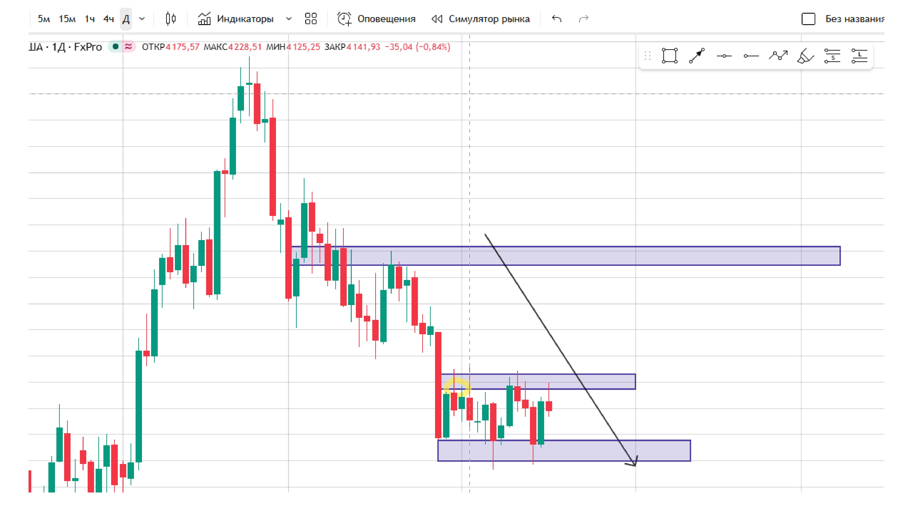
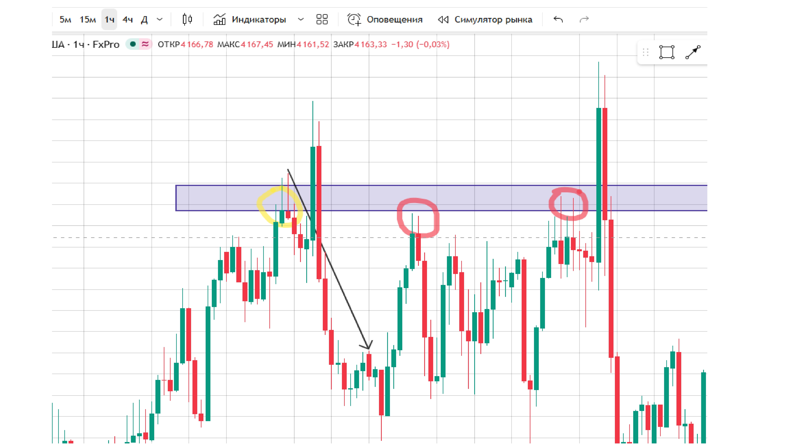
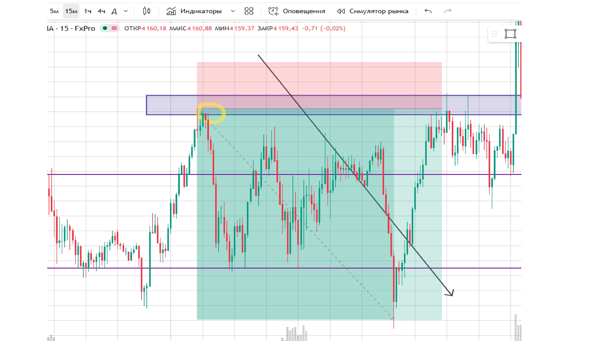
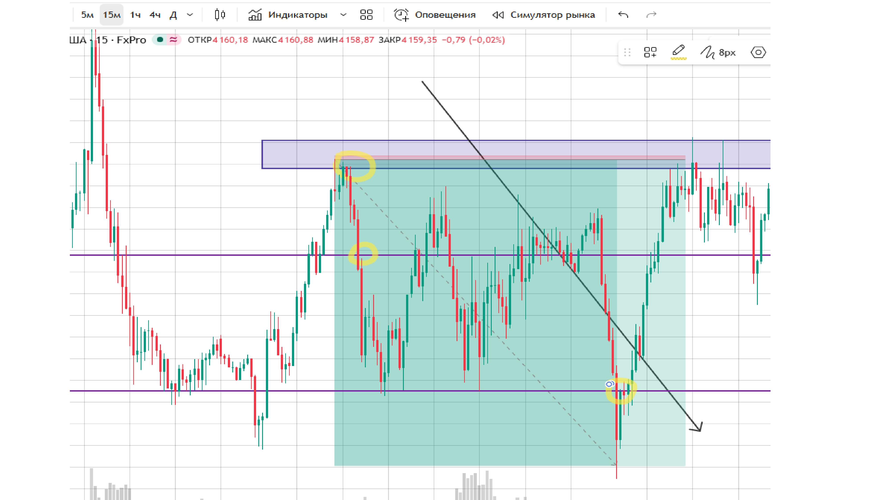

Сценарий сделки
Представим, что мы торгуем золото (XAUUSD) на таймфрейме H1. Цена находится в районе 4180–4200. Наша задача — найти точку входа на продажу (шорт) по тренду и с хорошим соотношением риск/прибыль.
Шаг 1. Анализ старшего таймфрейма (D1)
На дневном графике видим, что цена сделала несколько попыток пробить уровень 4200 и не смогла. Это сильное сопротивление. Тренд — боковой с наклоном вниз. Предпочтение отдаём продажам.

Шаг 2. Анализ среднего таймфрейма (H1)
На часовом графике цена подходит к зоне сопротивления 4195–4200. Здесь ранее уже было 3 касания. Это подтверждает силу уровня.

Шаг 3. Ждём сигнал
Что мы ищем:
- Разворотную свечу (молот, поглощение) у уровня 4195–4200.
- Дивергенцию RSI (цена делает новый максимум, RSI — нет).
- Снижение объёма на подходе к уровню.
Шаг 4. Точка входа
Допустим, сформировалось медвежье поглощение у 4197. Открываем шорт по цене 4195.
Шаг 5. Стоп-лосс и тейк-профит
- Стоп-лосс: 4205 (за уровнем сопротивления + запас 8 пунктов). Риск — 10 пунктов.
- Тейк-профит 1: 4175 (первая поддержка).
- Тейк-профит 2: 4150 (более сильная поддержка).
- Тейк-профит 3: 4120 (глубокая цель).

Шаг 6. Соотношение риск/прибыль
Риск — 10 пунктов. Потенциальная прибыль до TP1 — 20 пунктов. Соотношение 1:2. До TP2 — 45 пунктов (1:4.5). Отличный сетап.
Шаг 7. Сопровождение сделки
Когда цена ушла в плюс на 20 пунктов:
- Переводим стоп-лосс в безубыток (по цене входа 4195).
- Часть позиции (например, 50%) закрываем на TP1.
- Остаток держим до TP2 или TP3, подтягивая стоп.
Шаг 8. Итог сделки
Допустим, цена дошла до 4150 (TP2). Итог:
- 50% позиции закрыто на 4175 — прибыль 20 пунктов.
- 50% позиции закрыто на 4150 — прибыль 45 пунктов.
- Средний результат: 32.5 пункта прибыли при риске 10 пунктов.

Что важно уяснить из урока
- Перед сделкой всегда есть план: вход, стоп, тейки.
- Риск/прибыль минимум 1:2.
- Перевод стопа в безубыток — обязательный шаг.
- Частичное закрытие позиции снижает риск.
- Работаем по тренду старшего таймфрейма.